Домашняя пицца (на тонком тесте)
| 570 | |
330 отзыва
 Домашняя пицца как из пиццерии? Вполне реально. Чтобы приготовить идеальную пиццу в самой обычной духовке важно помнить следующее:
Домашняя пицца как из пиццерии? Вполне реально. Чтобы приготовить идеальную пиццу в самой обычной духовке важно помнить следующее:— Не так важен рецепт теста, не так важен рецепт соуса и сорт начинки как температурный режим выпекания.
Итальянскую пиццу в оригинале готовят в дровяной печи при температуре 450-550 С, не больше 1 минуты, благодаря чему она получается хрустящей снаружи, с тонким эластичным коржом, сымитировать дровяную печь с настолько высокой температурой выпечки в домашних условиях не просто, поэтому применяют такие методы : разогревают духовку максимально (250-300 С), вместо противня используют специальный каменный лист, который нагревают вместе с духовкой. На камне выпекают пиццу не дольше 10-15 минут.
Поскольку у меня камня нет, я выпекаю на металлическом противне, но при самой высокой температуре (250-300 С) в очень хорошо разогретой до этой температуры духовке. На выпечку уходит 10-15 минут в зависимости от размеров изделия. Как только бортики теста зарумянятся, а сыр расплавится и начнет пузырится пицца готова. Сразу вынимайте ее! Важно не пересушить пиццу, это часто случается если ее выпекают при средних температурах (около 180 С) продолжительное время (минут 20-30).
— Тесто для пиццы делают по самому простому рецепту постного дрожжевого теста с добавлением оливкового масла, взошедшее тесто не обминают второй раз, а сразу растягивают ладонями лепешку до нужных размеров. Считается, что скалка разрушает пузырьки воздуха в толще теста, поэтому ее не используют. Я все же раскатываю тесто скалкой, но даю основе «подышать» минут 20, чтобы пузырьки воздуха внутри снова образовались.
— чтобы основа пиццы при выпечке не стала сухой и жирной, раскатав лепешку, уложите ее на присыпанный мукой противень (маслом его смазывать не надо, только мукой).
— Чтобы основа не стала мокрой от избыточной влаги начинки и соуса, уложив тесто в противень, первым делом сторону на которую будете выкладывать начинку смажьте оливковым маслом, только после этого распределяйте соус и начинку.
— Чтобы пицца получилась вкусной и хорошо пропеклась за короткое время не перегружайте ее ингредиентами, сыр распределяйте горками на небольшом расстоянии.
Рекомендации по приготовлению в современных духовках:
При выпечке пиццы в новых современных духовках пользуйтесь рекомендациями производителя духовки. Смотрите инструкцию.
Почему это так важно?
Старенькие отечественные духовки почти всегда немного негерметичны и при выпечке обеспечивается естественная вентиляция (конвекция). В старой духовке достаточно выставить максимальную температуру нагрева, хорошенько прогреть саму духовку и пицца получается идеальной — с сухими хрустящими бортиками и сочной сырной серединкой. Эффект печи.
Современные же духовки герметичны и поэтому при стандартном нагреве (классический нагрев верх+низ) влага не испаряется и пицца получается влажной. Результат совсем не тот. Потому рекомендую воспользоваться режимом для выпечки пицц, который предлагается в инструкции к Вашей духовке, обычно он включает мощный нагрев + режим вентилятора. У меня такой режим называется «Нагрев снизу +вентиляционный нагрев» при этом противень нужно ставить не по середине, а ближе к низу духовки. Температуру выставляю 220С. Пицца получается идеальная, не мокрая, очень вкусная!
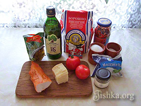Ингредиенты
(1 прямоугольная пицца 35Х37см (весь противень)):
(1 прямоугольная пицца 35Х37см (весь противень)):
Тесто:
- 300г (2 полных стакана) муки
- 2 ч.л. сахара
- 0,5 ч.л. соли
- 0,8 стакана воды (160 мл)
- 2 ст.л оливкового масла
- 1 ч.л. сухих дрожжей
Начинка:
- 300 г ветчины или балыка
- 200 г моцареллы
- 20-30 г пармезана
- 1 средний свежий помидор
- 15-20 оливок
Соус:
- 1 ст.л. томатной пасты
- 3-4 ст.л. воды
- 0,3 ч.л. соли
- 0,5 ч.л. сахара
- 1 ч.л. сухого орегано (трава душица)
- 2 ст.л. оливкового масла extra virgin (для смазывания теста)
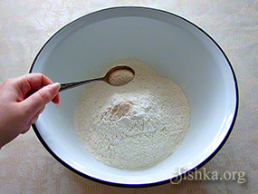В просеянную через дуршлаг или сито муку добавляем сухие дрожжи(1 ч.л.), сахар(2 ч.л.), соль(0,5 ч.л.).
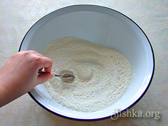Перемешиваем сухие ингредиенты ложкой.
Это делается для того, чтобы дрожжи и сахар равномерно распределились в муке, а соль не контактировала непосредственно с дрожжами т.к. будет мешать им взойти.
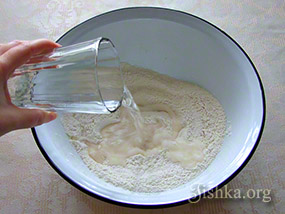Добавляем воду (0,8 стакана это 160 мл).
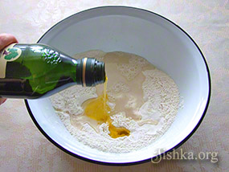Вливаем оливковое масло 2 ст.л.
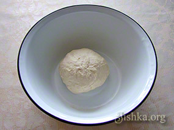Смазываем руки любым растительным маслом и вымешиваем тесто минут 10. Оно должно получится эластичным, мягким, влажным и не сухим. Если тесто туговато вмешайте в него еще пару ложек воды и ложку масла.
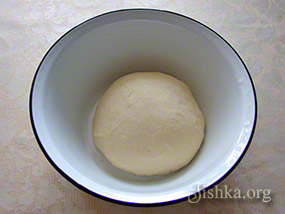Гладкое вымешанное тесто накрываем полотенцем и отставляем в теплое место без сквозняков на 1,5 часа(или пока не увеличится вдвое).
Тесто, например, можно положить в большую кастрюлю с крышкой, а кастрюлю в наполненную теплой водой ванную).
Тесто после всхода не обминаем.
Тесто, например, можно положить в большую кастрюлю с крышкой, а кастрюлю в наполненную теплой водой ванную).
Тесто после всхода не обминаем.
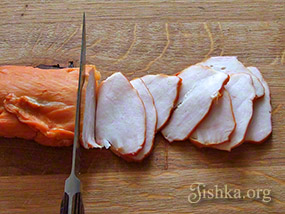Тем временем подготовим ингредиенты для начинки.
Мясо тонко нарезать ломтиками в 2 мм.
Мясо тонко нарезать ломтиками в 2 мм.
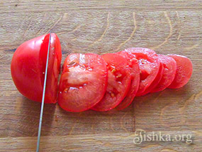Помидор нарезать тонкими ломтиками в 2 мм.
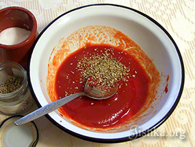Готовим соус.
Томатную пасту (1 ст.л) разводим водой (4 ст.л.) до консистенции густого томатного сока. Солим (0,3 ч.л. соли), сахарим (0,5 ч.л. сахара), всыпаем сухую траву орегано (душицу) 1 ч.л. с верхом. Перемешать.
Томатную пасту (1 ст.л) разводим водой (4 ст.л.) до консистенции густого томатного сока. Солим (0,3 ч.л. соли), сахарим (0,5 ч.л. сахара), всыпаем сухую траву орегано (душицу) 1 ч.л. с верхом. Перемешать.
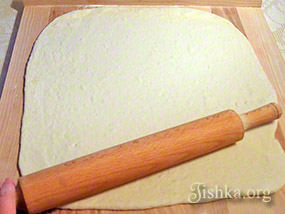Вываливаем тесто из миски на посыпанную мукой поверхность. Дополнительно обминать тесто не нужно, раскатываем поднявшееся тесто непосредственно скалкой до толщины 0,5 см.
Я делаю прямоугольник на целый противень, но можно разделить тесто на 2 куска и выкатать поочередно 2 круга.
Я делаю прямоугольник на целый противень, но можно разделить тесто на 2 куска и выкатать поочередно 2 круга.
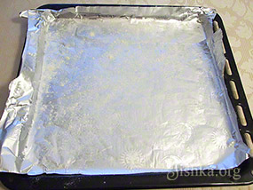Включить духовку на максимальную температуру (250-300 С). Пиццы пекут в хорошо разогретых духовых шкафах при самых высоких температурах.
Подготовить противень: застелить его фольгой и присыпать мукой. Смазывать маслом не рекомендую т.к. тонкое тесто напитается маслом и не пропечется, а прожарится как пирожок на сковородке.
Подготовить противень: застелить его фольгой и присыпать мукой. Смазывать маслом не рекомендую т.к. тонкое тесто напитается маслом и не пропечется, а прожарится как пирожок на сковородке.
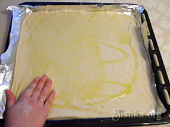На противень уложить раскатанную основу для пиццы. Смазать ее оливковым маслом (2 ст.л).
Этот пункт очень важен, смазать маслом корж необходимо иначе он может размокнуть от соуса. Если нет оливкового масла — смажьте простым растительным без запаха. Дать тесту отдохнуть минут 20, за это время в нем восстановятся пузырьки, выдавленные скалкой. После этого переходим к следующему пункту.
Этот пункт очень важен, смазать маслом корж необходимо иначе он может размокнуть от соуса. Если нет оливкового масла — смажьте простым растительным без запаха. Дать тесту отдохнуть минут 20, за это время в нем восстановятся пузырьки, выдавленные скалкой. После этого переходим к следующему пункту.
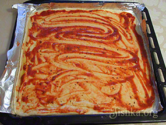Смазать соусом.
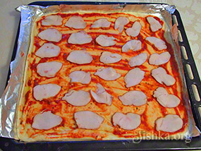Выложить мясо.
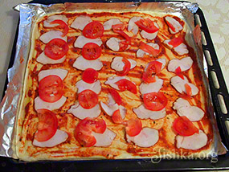Выложить помидоры.
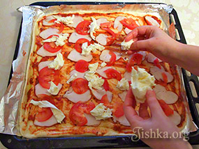Выложить моцареллу, отщипывая кусочки руками.
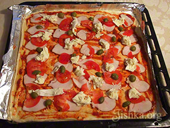Оливки разделить пальцами на половинки и равномерно разложить.
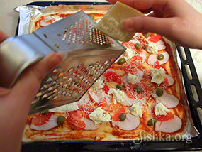Пармезан натереть на мелкой терке прямо на пиццу.
Перегружать основу начинкой не стоит, она может плохо пропечься и растерять вкусовую гамму. Как говорят итальянцы для хорошей пиццы достаточно смазать основу ароматным оливковым маслом и посыпать орегано. Не зря так популярна «Маргарита» — одна из самых минималистичных в плане начинки пицц.
Перегружать основу начинкой не стоит, она может плохо пропечься и растерять вкусовую гамму. Как говорят итальянцы для хорошей пиццы достаточно смазать основу ароматным оливковым маслом и посыпать орегано. Не зря так популярна «Маргарита» — одна из самых минималистичных в плане начинки пицц.
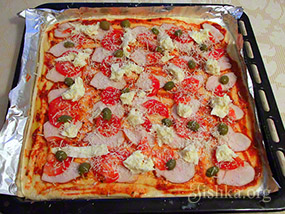Пиццу выпекать в хорошо разогретой духовке на средней полочке при максимальной температуре (около 250-300 градусах) 7-15 минут в зависимости от возможностей духовки. В своей старенькой духовке я пеку 12 минут на максимальной мощности. Как только бортики теста зарумянится, а сыр расплавится и начнет пузырится пицца готова. Сразу вынимайте ее!
Важно не пересушить пиццу, это часто случается если ее выпекают при средних температурах (около 180 С) продолжительное время (минут 20-30). Так долго пиццу нельзя выпекать. В оригинале она печется при 450-550 градусах в дровяных печах не дольше 1 минуты.
ВАЖНО:
Для современных духовок (не стареньких отечественных):
Рекомендую воспользоваться режимом, который предлагается в инструкции для выпечки пицц, обычно он включает мощный нагрев + режим вентилятора. В моей новой духовке такой режим называется «Нагрев снизу +вентиляционный нагрев» при этом противень нужно ставить не по середине, а ближе к низу. Температуру выставляю 220С.
Читайте советы в начале этого поста, во вступлении.
Важно не пересушить пиццу, это часто случается если ее выпекают при средних температурах (около 180 С) продолжительное время (минут 20-30). Так долго пиццу нельзя выпекать. В оригинале она печется при 450-550 градусах в дровяных печах не дольше 1 минуты.
ВАЖНО:
Для современных духовок (не стареньких отечественных):
Рекомендую воспользоваться режимом, который предлагается в инструкции для выпечки пицц, обычно он включает мощный нагрев + режим вентилятора. В моей новой духовке такой режим называется «Нагрев снизу +вентиляционный нагрев» при этом противень нужно ставить не по середине, а ближе к низу. Температуру выставляю 220С.
Читайте советы в начале этого поста, во вступлении.
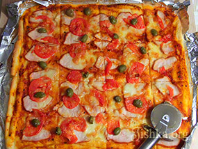Дать пицце отойти пару минут, нарезать колесиком на порционные кусочки и подавать!
Приятного аппетита!
Приятного аппетита!
Джонни, пожалуйста и на здоровье!
Спасибо, первый раз делал, понравился рецепт, вышло неплохо
Дмитрий, мне очень жаль, что пицца не вышла, но кажется проблема или в режиме духовки, или переборщили со временем выпекания.
Поскольку печем при высокой температуре — очень важно следить за временем.
Спасибо вам за ваш рецепт, таких гарелых пиц я ещё не готовил, продукты испорчены.
Рецепт СУПЕР!
Инна, очень рада, что рецепт помог! Благодарю за такой добрый отзыв!
Ох, дай Бог здоровья автору за такие подробные разьяснения (о температуре и т.д.). Наконец-то у меня получилась впервые за многие десятки попыток — настоящая сочная пицца с хрустящей корочкой! ♥
А до того — всегда получалась сухая подошва (((
Валерия, пожалуйста и на здоровье! Очень рада, что рецепт Вам понравился!
отличный рецепт! описаны все нюансы. большое спасибо. пицца превосходная
Сыра маловато
Катя, пожалуйста!
Спасибо за рецепт пиццы. Очень вкусная получается!
Саша, как приятно! На здоровье! Очень рада, что рецепт прижился!
Отличный рецепт! Пользуюсь им постоянно!
Стрэйджен, благодарю за теплый отзыв! Очень рада, что рецепт помог!